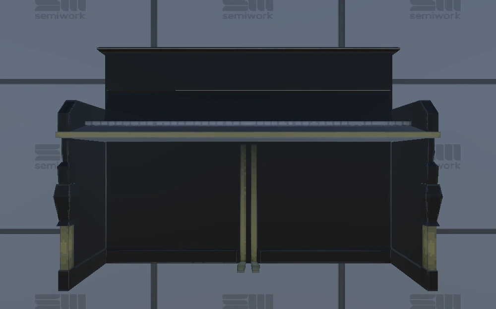

Objetos vendibles
Los objetos vendibles son cualquier objeto que se pueda vender en un punto de extracción. Algunos son exclusivos de una ubicación y solo aparecen en esa ubicación específica, mientras que otros son generales y aparecen en todas las ubicaciones.
Los objetos vendibles tienen 7 categorías de tamaño, siendo:
- Diminuto
- Pequeño
- Medio
- Grande
- Ancho
- Alto
- Muy alto
Los objetos vendibles también tienen 11 categorías de "Tamaño de combate" que determinan el daño de un objeto cuando golpea a un monstruo, siendo:
- 0/2/5/8
- 0/3/6/10
- 0/4/8/12
- 0/5/10/15
- 0/10/20/30
- 0/15/30/45
- 0/17/35/52
- 0/20/40/60
- 0/25/50/75
- 0/30/60/90
- 0/40/80/120
Cualquier objeto vendible en el juego aturdirá a los enemigos "pequeños", pero solo aquellos objetos vendibles que tengan un daño máximo de 30 o más aturdirán a los "enemigos grandes".
Los objetos vendibles pueden aturdir sin causar daño alguno.
Pequeños enemigos:
Grandes enemigos:
No puede ser aturdido ni dañado:
Si el Dron indestructible está conectado al objeto, no puede aturdir ni golpear a los monstruos , sin embargo aturdirá a los jugadores sin causarles daño.
A pesar del nombre " Dron Indestructible ", los objetos no perderán su valor como se esperaba, pero sí tendrán interacciones especiales intactas (ruidos de caja de animales, explosiones de barriles, rotura de caja de escoba, etc.)
También existen 11 categorías de valor, siendo:
- Muy barato (menos de $300)
- Barato- ($300-$450)
- Barato ($500-$650)
- Barato+ ($850-$1100)
- Barato++ ($1200-$2000)
- Mediano ($2000-$3000)
- Mediano+ ($3500-$4500)
- Alto ($5500-$7500)
- Alto+ ($9500-$12000)
- Caro ($18000-$25000)
- Caro+ ($30000-$45000)
Algunos objetos valiosos están clasificados como trampas , lo que significa que tienen la posibilidad de dañar al jugador o atraer enemigos.
Las interacciones de las trampas que se detallarán a continuación se activan aleatoriamente al interactuar el jugador con un objeto. Un fallo en la pantalla indica que la trampa se ha activado.
| Nombre del item | Imágen | Valor | Tamaño | Daño | Interacción con trampas | Frágil | Mapa | Detalle |
|---|---|---|---|---|---|---|---|---|
| Anillo de esmeralda |  |
Barato | Diminuto | 0/2/5/8 | No es una trampa | No | Todos | |
| Copa | Barato | Diminuto | 0/2/5/8 | No es una trampa | No | Todos | ||
| Ocarina |  |
Barato | Diminuto | 0/2/5/8 | No es una trampa | No | Todos | |
| Reloj de bolsillo | Barato | Diminuto | 0/2/5/8 | No es una trampa | No | Todos | ||
| Taza de uranio |  |
Barato++ | Diminuto | 0/2/5/8 | No es una trampa | Sí | Todos | |
| Diamante |  |
Medio | Diminuto | 0/2/5/8 | No es una trampa | Sí | Todos | |
| Pequeño excedente valioso |  |
Muy barato - Medio+ | Pequeño | 0/5/10/15 | No es una trampa | No | Todos | Se otorga cuando se proporciona dinero extra ($1-$5000) a un punto de extracción. |
| Corona | Barato | Pequeño | 0/2/5/8 | No es una trampa | No | Todos | ||
| Muñeca | Barato | Pequeño | 0/5/10/15 | No es una trampa | No | Todos | ||
| Dinero | Barato | Pequeño | 0/5/10/15 | No es una trampa | No | Todos | ||
| Rana | Barato+ | Pequeño | 0/2/5/8 | Salta inmediatamente si lo sueltas a menos que lo hayas colocado en el carrito o punto de extracción. | No | Todos | Al impactar, puede comenzar a saltar durante 10 segundos, causándose daños a sí mismo y a otros objetos. | |
| Caja de gemas | Barato+ | Pequeño | 0/5/10/15 | No es una trampa | No | Todos | ||
| Mono de juguete | Barato+ | Pequeño | 0/5/10/15 | El mono comienza a golpear los platillos mientras se mueve ligeramente. | No | Todos | ||
| Árbol bonsái | Barato+ | Pequeño | 0/5/10/15 | No es una trampa | No | Exclusivo de la estación McJannek. | ||
| Pequeño enemigo valioso |  |
Barato+ - medio | Pequeño | 0/3/6/10 | No es una trampa | Sí | Todos | Se suelta al matar a un enemigo. No recibe daño durante 5 segundos después de que un enemigo lo suelte. |
| Jarrón pequeño | Barato++ | Pequeño | 0/2/5/8 | No es una trampa | Sí | Todos | ||
| Globo | Barato++ | Pequeño | 0/5/10/15 | No es una trampa | No | Todos | ||
| Disco duro | Medio | Pequeño | 0/10/20/30 | No es una trampa | No | Exclusivo de la estación McJannek. | ||
| Libro de masticar | Medio | Pequeño | 0/2/5/8 | Libro rompe la cerradura, vuela y empieza a atacarte con mordiscos. Está activo durante aproximadamente 9 segundos. Inflige 20 de daño a los enemigos y 5 de daño a los jugadores por mordisco. | No | Exclusivo de Swiftbroom Academy. | Un libro dañino no hace nada. | |
| Poción de amor | Medio | Pequeño | 0/5/10/15 | No es una trampa | No | Exclusivo de Swiftbroom Academy. | Al recogerlo, el jugador dirá cosas agradables sobre el jugador más cercano o dirá algo agradable sobre la poción si no hay nadie cerca. | |
| Placa de uranio | Medio | Pequeño | 0/2/5/8 | No es una trampa | Sí | Todos | ||
| Caja de música |  |
Medio+ | Pequeño | 0/5/10/15 | No es una trampa | No | Exclusivo de Headman Manor. | Al recogerlo, hará que el jugador gire como una bailarina, lo que hará que sea un poco difícil colocarlo en el carrito sin golpearlo contra nada. |
| Computadora portátil | Medio | Medio | 0/5/10/15 | No es una trampa | No | Exclusivo de la estación McJannek. | ||
| Paquete de muestra de seis | Medio | Medio | 0/10/20/30 | No es una trampa | No | Exclusivo de la estación McJannek. | ||
| Muestra | Medio | Medio | 0/5/10/15 | No es una trampa | No | Exclusivo de la estación McJannek. | ||
| Botella |  |
Medio | Medio | 0/5/10/15 | Lo mismo que cuando choca con algo. | No | Todos | Al chocar con algo, el corcho puede salirse de la botella y salpicar por todas partes. Después de un tiempo, volverá a la normalidad. |
| Payaso | Medio | Medio | 0/10/20/30 | No es una trampa | No | Todos | Si lo agarran por la nariz, graznará y se reirá. Si lo agarran tres veces por la nariz, se convertirá en un explosivo temporizado. Tras cada graznido, el payaso emite un sonido único que ayuda a determinar cuándo explotará. Esto puede ser útil en el modo multijugador. ¿Tiene 250/300 de daño? | |
| Computadora | Medio | Medio | 0/10/20/30 | No es una trampa | No | Exclusivo de la estación McJannek. | ||
| Admirador | Medio | Medio | 0/5/10/15 | No es una trampa | No | Exclusivo de la estación McJannek. | Al sostenerlo, producirá una corriente de aire que volará todo lo que se encuentre frente a él. | |
| Gramófono | Medio | Medio | 0/10/20/30 | No es una trampa | No | Exclusivo de Headman Manor. | Se enciende y reproduce música que atrae a los enemigos. | |
| Radio | Medio | Medio | 0/15/30/45 | No es una trampa | No | Exclusivo de Headman Manor. | Se enciende y emite un sonido que atrae a los enemigos. | |
| Trofeo | Medio | Medio | 0/5/10/15 | No es una trampa | No | Todos | ||
| Jarrón mediano | Medio | Medio | 0/5/10/15 | No es una trampa | Sí | Todos | ||
| Cabeza de duende | Medio | Medio | 0/15/30/45 | No es una trampa | No | Exclusivo de Swiftbroom Academy. | ||
| Cristal de poder | Medio | Medio | 0/5/10/15 | No es una trampa | No | Exclusivo de Swiftbroom Academy. | Al romperse, explota. La explosión siempre inflige 50 de daño tanto a enemigos como a jugadores. | |
| Tanque de propano | Medio+ | Medio | 0/5/10/15 | No es una trampa | No | Exclusivo de la estación McJannek. | Si se daña, emite llamas durante aproximadamente 14 segundos (puede ser aleatorio). Inflige 2 de daño a monstruos (hasta 30 DPS) y 1 de daño a jugadores (hasta 19 DPS) por cada ciclo de daño. Al romperse, crea una explosión que inflige 100 de daño a monstruos y 50 de daño a jugadores. | |
| Barco en una botella | Medio+ | Medio | 0/5/10/15 | No es una trampa | No | Exclusivo de Headman Manor. | ||
| Enemigo mediano valioso | Medio+ - Alto | Medio | 0/4/8/12 | No es una trampa | Sí | Todos | Se suelta al matar a un enemigo. No recibe daño durante 5 segundos después de que un enemigo lo suelte. | |
| Impresora 3D |  |
Alto | Medio | 0/15/30/45 | No es una trampa | No | Exclusivo de la estación McJannek. | |
| Reloj de arena |  |
Alto | Medio | 0/5/10/15 | No es una trampa | No | Exclusivo de Swiftbroom Academy. | Cuando un jugador agarra el reloj de arena, éste reducirá drásticamente su velocidad y bajará la velocidad y el tono de su voz. |
| Excedente medio valioso | Alto - Alto+ | Medio | 0/10/20/30 | No es una trampa | No | Todos | Se otorga cuando se proporciona dinero extra ($5001-$10000) a un punto de extracción. | |
| Gran muestra |  |
Medio | Grande | 0/5/10/15 | No es una trampa | No | Todos | |
| Lanzallamas | Medio+ | Grande | 0/20/40/60 | No es una trampa | No | Exclusivo de la estación McJannek. | Al impactar, libera un chorro de llamas. Al sujetarlo por el mango rojo, la llama se enciende continuamente hasta extinguirse. Inflige 15 de daño a monstruos (hasta 48 DPS) y 10 de daño a jugadores (hasta 40 DPS) por cada ciclo de daño. Tiene 10 segundos de combustible. CONSEJO: Se puede usar para convertir un CARRITO en una torreta móvil. Si un jugador coloca un objeto de valor Grande o Mediano en el carro para evitar que el Lanzallamas caiga completamente dentro, la boquilla quedará fuera. Esto es especialmente efectivo contra la Túnica, ya que el carro la mantendrá alejada, mientras que el daño del Lanzallamas evitará que la Túnica ataque el carro. | |
| Guitarra | Medio+ | Grande | 0/15/30/45 | No es una trampa | No | Exclusivo de la estación McJannek. | Si tocas las cuerdas emitirán un sonido. | |
| Enfriador de muestras | Medio+ | Grande | 0/15/30/45 | No es una trampa | No | Exclusivo de la estación McJannek. | ||
| Exhibición de diamantes | Medio+ | Grande | 0/15/30/45 | No es una trampa | No | Exclusivo de Headman Manor. | ||
| Sierra de hielo | Medio+ | Grande | 0/5/10/15 | Se enciende durante un tiempo determinado sin posibilidad de apagarlo. | No | Exclusivo de la estación McJannek. | Al interactuar, se activa y causa daño a todo lo que toca la hoja de sierra. Inflige 5 de daño a los enemigos (hasta 17 DPS) y 1 de daño a los jugadores (hasta 8,2 DPS). | |
| Poción maestra | Medio+ | Grande | 0/15/30/45 | No es una trampa | No | Exclusivo de Swiftbroom Academy. | CONSEJO: Aunque se asemeja a un objeto de vidrio típico, resulta bastante resistente, lo que permite su uso como arma contundente. Como cabe fácilmente en un carrito, pero es bastante voluminoso, conviene transportarlo en un carrito y depositarlo rápidamente en un punto de extracción, dejando espacio libre en el carrito para objetos más pequeños y compactos. | |
| Gran enemigo valioso | Alto | Grande | 0/5/10/15 | No es una trampa | Sí | Todos | Se suelta al matar a un enemigo. No recibe daño durante 5 segundos después de que un enemigo lo suelte. | |
| Muñeca que grita | Alto | Grande | 0/10/20/30 | No es una trampa. El juego no lo clasifica como una trampa, pero aun así, tenga cuidado al recogerlo. | No | Exclusivo de Headman Manor. | Al sostenerlo, grita, ataca agitando los brazos e intenta acercarse al jugador (esto se puede minimizar moviendo constantemente el muñeco para alejarlo de ti). Inflige 1 de daño por golpe a los monstruos y 2 de daño por golpe a los jugadores.Necesita más pruebas, el código llama a la colisión al calcular el daño, por lo que puede ser inconsistente. | |
| Televisión | Alto | Grande | 0/20/40/60 | Se enciende y comienza a reproducir un canal aleatorio y hace ruido, lo que atrae a los enemigos. | No | Exclusivo de Headman Manor. | ||
| Jarrón grande |  |
Alto | Grande | 0/20/40/60 | No es una trampa | Sí | Todos | |
| Cubo del conocimiento | Alto+ | Grande | 0/30/60/90 | No es una trampa | No | Exclusivo de Swiftbroom Academy. | CONSEJO: Dado que tiene un alto valor, un gran peso y cabe perfectamente en un CARRITO, es aconsejable transportarlo al punto de atracción más cercano utilizando un carrito para evitar el riesgo de daños y luego dejarlo para liberar espacio en el carrito para artículos más pequeños. | |
| Barril |  |
Alto+ | Grande | 0/20/40/60 | No es una trampa. El juego no lo clasifica como una trampa, pero aun así, tenga cuidado al recogerlo. | No | Exclusivo de la estación McJannek. | Si el barril recibe tres impactos, causará varias explosiones rapidísimas, cada una infligiendo 100 de daño tanto a monstruos como a jugadores (el daño siempre es el mismo, aunque debe calcularse según el tamaño y la velocidad de la explosión). Puede explotar incluso bajo el efecto de un dron indestructible, pero el barril no se destruirá. Esto lo convierte en un arma excelente, pero ten en cuenta que, debido a un error, al desactivar el dron después de que el barril haya explotado, este volverá a explotar y lo destruirá. |
| Pierna de criatura | Alto+ | Grande | 0/25/50/75 | No es una trampa | No | Exclusivo de la estación McJannek. | ||
| Gran excedente valioso | Alto+ - Caro+ | Grande | 0/15/30/45 | No es una trampa | No | Todos | Se otorga cuando se proporciona dinero extra ($10001+) a un punto de extracción. | |
| Bloque de hielo | Alto+ | Ancho | 0/25/50/75 | No es una trampa | No | Exclusivo de la estación McJannek. | ||
| Dinosaurio | Caro | Ancho | 0/20/40/60 | No es una trampa | Sí | Exclusivo de Headman Manor. | ||
| Caja para animales |  |
Caro | Ancho | 0/20/40/60 | No es una trampa | No | Todos | Si no está en posición vertical (flecha hacia arriba) o está dañado, empezará a hacer ruidos, recibirá daño y generará/atraerá monstruos. Explotará al romperse, infligiendo 300 de daño a los monstruos y 50 de daño a los jugadores. CONSEJO: Dañarlo puede forzar la aparición de monstruos. Colocarlo de lado o voltearlo obligará a los monstruos a permanecer cerca hasta su destrucción, lo que permite el control de masas y/o una fácil caza de monstruos. También se puede usar al principio de las rondas finales para determinar qué monstruos están activos. |
| Piano |  | Caro+ | Ancho | 0/40/80/120 | No es una trampa | No | Exclusivo de Headman Manor. | Reproduce notas al interactuar con las teclas. |
| Estatua del grifo | Caro+ | Ancho | 0/40/80/120 | No es una trampa | No | Exclusivo de Swiftbroom Academy. | ||
| Espada | Alto+ | Alto | 0/15/30/45 | No es una trampa | No | Exclusivo de Swiftbroom Academy. | No debe confundirse con el objeto comprable espada, ya que este no se puede colocar en el inventario y no está destinado a usarse como arma. | |
| Estación Científica | Caro | Alto | 0/25/50/75 | No es una trampa | No | Exclusivo de la estación McJannek. | ||
| Arpa | Caro | Alto | 0/20/40/60 | No es una trampa. No se puede encontrar en el código. Se desconoce si está clasificado como trampa o no. Si lo encuentra, pegue el nombre de la clase. | No | Exclusivo de Headman Manor. | Al interactuar con las cuerdas, cada una emite su propio sonido. | |
| Cuadro | Caro | Alto | 0/20/40/60 | No es una trampa | No | Exclusivo de Headman Manor. | ||
| El bastón de Dumgolf | Caro+ | Alto | 0/17/35/52 | No es una trampa. El juego no lo clasifica como una trampa, pero el láser puede arruinar la carrera si no se apunta correctamente. | No | Exclusivo de Swiftbroom Academy. | Si se daña, el cristal del extremo emite un láser, similar al del Payaso, que daña todo lo que toca. Inflige 10 de daño a los enemigos (hasta 37 DPS) y 35 de daño a los jugadores (hasta 57,5 DPS) por cada ciclo de daño. CONSEJO: Este objeto puede ser bastante peligroso si se manipula incorrectamente. Para evitar riesgos para los jugadores y los objetos, asegúrate de manipularlo desde el centro para que se mantenga estable. | |
| Escoba |  |
Alto+ | Muy alto | 0/17/35/52 | No es una trampa. El juego no lo clasifica como una trampa, pero aun así, tenga cuidado al recogerlo. | No | Exclusivo de Swiftbroom Academy. | Si la caja se rompe, la escoba volará hacia arriba y hacia adelante, dañándose. La caja podría romperse incluso bajo la acción de un dron indestructible. CONSEJO: La caja se puede destruir sin dañar el objeto. La escoba dejará de volar al colocarla en una zona de extracción. |
| Estatua dorada | Caro | Muy alto | 0/20/40/60 | No es una trampa | No | Exclusivo de Headman Manor. | ||
| Rack de servidores | Caro | Muy alto | 0/25/50/75 | No es una trampa | No | Exclusivo de la estación McJannek. | ||
| Reloj de pie | Caro | Muy alto | 0/25/50/75 | La campana empieza a sonar fuerte. | No | Exclusivo de Headman Manor. |